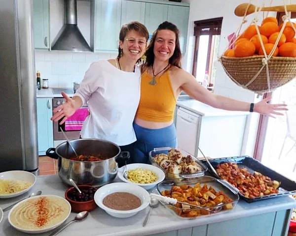
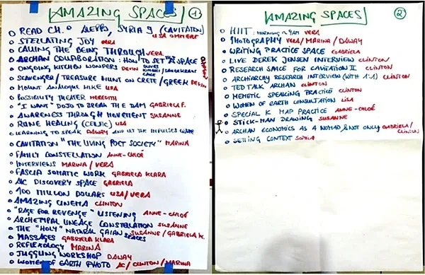
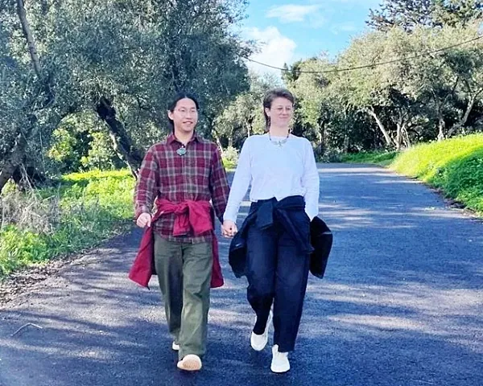
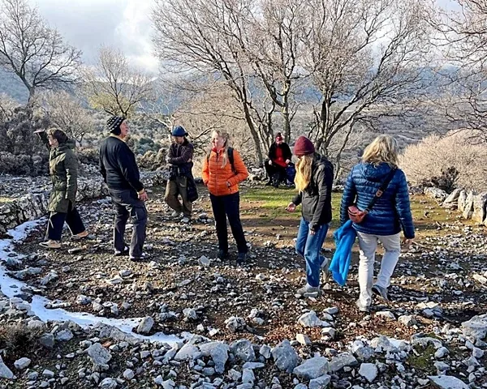
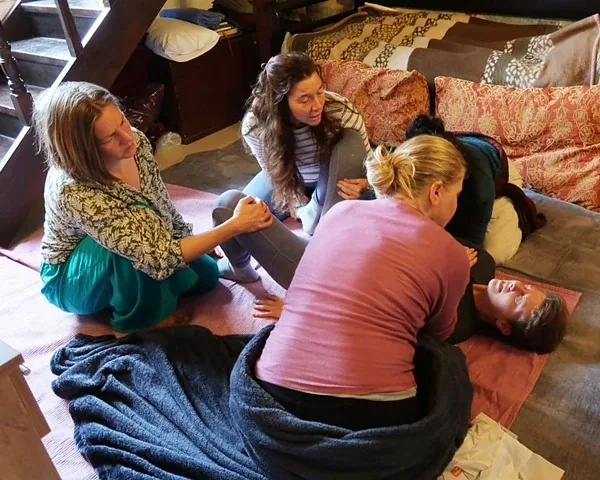
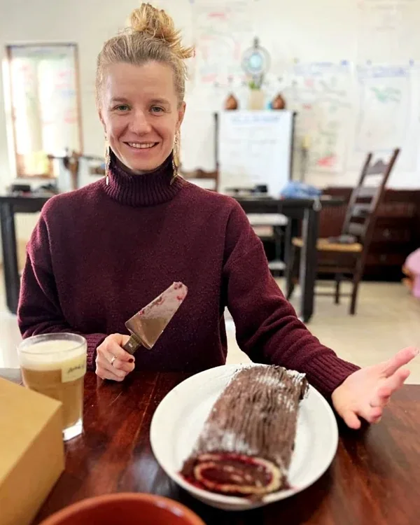
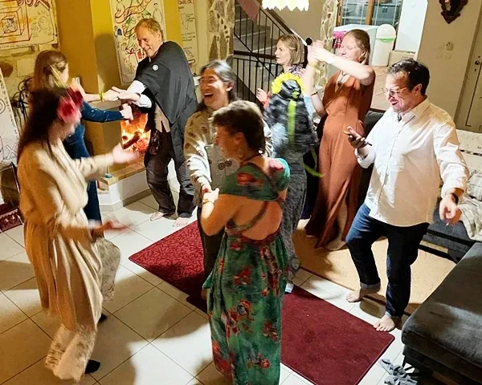

Gameworld Traditions on Strikingly

TRADITION #1: ROTATING SPACEHOLDERS
During the first physical meeting of the Cavitation Bridgehouse, I - as the originator of the Bridgehouse - immediately relinquished the main spaceholding. It was crucial, for the Bridgehouse to thrive, that each member became one of the sources of creation of our temporary community. This established a tradition: to rotate Spaceholders.
The first rotating job is that of the Spaceholder of the Bridgehouse. That person is radically responsible for the clarity of the energetic space and purpose for the house. We rotate spaceholder every 24h.
Beyond making sure that we have cooks for lunch and a dish-washing team, the Spaceholder of the Bridgehouse shift their orientation towards being a Gameworld Builder. The practice is to attune their attention to quest-ions such as, how could our house work better? What is missing? What is too much that could be dropped? What other experiment could we try? Who is falling behind, hiding? Who can teach us what? Which identity are people using today? Which other identity could they use?
The challenge is to not only notice, but to bring their noticing to the table in a way that would create possibility and expansion for the team. Those skills are worth an entire other article. Being Spaceholder for a Bridgehouse is being at the mouth of an immense source of 5-body food pouring down endlessly.
Other rotating Spaceholder jobs are cooks and cleaners. We decided to have one common meal together each day. Spaceholders for the main meal would replace themselves each night, similar to our tradition during Expand The Box training and Possibility Lab. Usually, the team is of two people. After lunch, a dish-washing team volunteers to clean up dishes and leftovers. In a house of 12 people, that means each person would cook and clean once a week. Imagine how much time you are spending cooking and cleaning living on your own?
But the tradition of rotating spaceholding is more than just saving time or “knowing” who is responsible. Twice a week, cooks or cleaners are bestowed up the opportunity to bless their fellow experimenters with nutritious, eccentric and experimental food as the foundation for the hour spent together around the table. People went full out: we had hand pulled Asian noodles, unpronounceable Indonesian squash dish, homemade pizza, french crepes, roasted cauliflowers in tahini sauce, wild salads, … And, the conversations matched the generosity on our plates.

TRADITION #2: THE AMAZING SPACE
I am so glad that we figured out to meet everyday. The Amazing Space became our red thread, our gravitational center, the heartbeat of the Bridgehouse. It took us less than 5 minutes to find a time that would work for almost everyone, almost every day. Quite a miracle with 12 hardened spaceholders around the circle. The time was 5-7pm, before ‘dinner’ and evening calls.
The Amazing Space is set up as a Nothing space, where Everything can happen. We usually spend 10-15 minutes doing logistics for the day, before diving into the juicy stuff.
In one of the first Amazing Spaces, we made two maps of what we long to create in the Amazing Spaces.
During Amazing Spaces, we deepened the context and practiced Memetic Engineering and Memetic Speaking, we research about Apprentices in Archiarchy, holding space for and delivering Extraordinary Interviews, becoming Archiarchy Invention Centers spaceholders, meeting people each time as if it was the first, we took apart old decisions and gave each other wild experiments, we listened to each other’s discoveries and whipped them up to the next level of clarity, and we wrote - a lot! - together!
Among many other things, Amazing Space became a door opened for Clinton and myself to be generous with the value that we are. The rest of the day, we would often be butts on a chair, in front of our computers, shaping gameworlds or writing the next book. Clinton and I might not be the funnest people to be around when we are ‘working’, we are focused. But during the Amazing Space, we would play full out on the playground of hungry and joyful researchers. The generosity in our spaceholding reflected and ignited generosity of other members in their specialised domains. And vice versa.
As a culture, it is possible to bypass the disease of competition (‘I have to do as much as… to be accepted’) and comparison (‘I will never be as good as… so why bother?’). When you allow for generosity to be met in its full expression, people have the chance to play as big as they truly are. Generosity breeds generosity.

TRADITION #3: WE ALL WANT TO KNOW
One tradition that we started back in my first Bridgehouse: the Writing House in 2019 in Brazil, is ‘We Want To Know’. If you are leaving the house, we want to know that you are going, where and with whom, and even maybe why. Many people react to this tradition with emotional reactivity. First comes the fear that someone else again wants to control their every move; then the anger of wanting to be free, and not be accountable to anyone.
When we explain, “We are interested in you. You are part of our house. We want to know where you are so we can be with you even when you are not physically close. We want to be with your needs and adventures. And, we have to be afraid when we do not know what is going on with you.” That is when people usually broke down into tears, realizing that nobody had been interested in them like this before. Past interests were often mixed with hidden purposes of manipulation and domination. It is a shock to their system that someone can love them without wanting to own them.
This tradition extends to if you decide to spend a day in your room and not interact with anyone in the Bridgehouse. You pop your head in the living room in the morning and announce, “I will be hiding in my room all day. I am fine. I will see you all tomorrow.” At this point, we discovered that it is also useful to clearly announce to the cooks, “I will not join the house for lunch, people do not cook for me.”
Evidently, if you spend two consecutive days hiding away, or that you repeat the process with regularity, something else than ‘just needing a day away’ is going on. Potentially, a demon egostate is gripping your aliveness and eating your energy away when it seems you have ‘too much’ of it when surrounded with fellow geniuses.
The tradition is as you are about to walk out the door, you grab the attention of whoever is around, and shout, “I am going for a walk with this person. We will be back in 30 minutes.”

TRADITION #4: ADVENTURE DAY
There are no weekends in Archiarchy. Weekends are an invention of modern culture. What a concept! You slave away 5 consecutive days doing something that you do not want to do, wistfully hoping for the weekends to come as fast as possible when supposedly you would do what you really want to do. In reality, your Gremlin mostly takes over the weekends, blowing off the “steam”, the rage of being a slave by drinking, partying, or going for calming walks in the forest. In Archiarchy, you do what you want to do. If you are not doing what you want, you are abusing yourself. That behavior is the seed of abusing others and the natural world.
So what, you might think, people always work in Archiarchy? There is no break? These questions come up often. But, they are so full of constructs and assumptions that I would be trailing off my wish to share with you about the Traditions of Generosity if I unpackaged them.
One of those Traditions is Adventure Day. In the Cavitation Bridgehouse, Adventure Day happened every 7th day. Adventure Day is a day of exploration, outside of the house, into unknown places. One person is the spaceholder for the Adventure Day. They can bring anyone on their team. The challenge is to entertain geniuses. Not an easy task. If you try to mother them, you probably send your friends into a fury. If you hold on to a fixed plan, you cement people’s wildness into broken expectations and resentment. The opportunity is to create an environment similar to a treasure hunt. Geniuses love treasure, but most of all they love the hunt for treasures!
Our first Adventure Day led by Daway Chou-Ren and Devin Gleeson. They made us talk to art pieces, Snake Goddesses, Minotaur paintings and amphoras. The museum of Archeology and History of Iraklion, filled with dead things, came to life with the most extraordinary tales of Minoan life and Greek gods. It was so powerful that Susanne jacked into the channel of Talking To The Gods.
Meredith took us to the Samarian Gorge for her birthday, in search of an invisible tree in a mordorian landscape. We became Frodos and Sams (from Lord of the Rings) set onto a particularly impossible quest. There is a lot to learn about sourcing Celebratory Adventure and Adventurous Celebration.

TRADITIONS #5: TAKING CARE OF EACH OTHER
There are things that you know about taking care of yourself that others do not.
For example, we decide to use the dish-washing machine. A number of people know that the common tablets leave a coat of deathly soap on the dishes to make them shine. I do not. Someone else know that a mix of 2 teaspoons of baking soda and 1 teaspoon of citric acid easily replaces the tablets. So, that is what we use.
Another example, from the corner of my eye, I see that Marina is using an aluminum-based deodorant, known to cause breast cancer. I agree with her to throw it out immediately, and to use, for example, Nuud deodorant. Clinton spend an ungodly amount of time taking photos and listing uses for other Archan Nomading Tools at: https://nomading.mystrikingly.com/#nomading-tools. I recommend checking them out.
We quickly, and thankfully, not bloodily, discover that some members of the Bridgehouse would clean sharp knives and unknowingly bury them under a pile of plates and cups on the drying rack, or place them blade side up in the cutlery department of the rack! To take care of each other’s fingers, we agree to clean, dry and immediately put away any sharp object in the drawers.
The trick with the Tradition of ‘Taking Care of Each Other’ is not to fall in the trap of your own Box’s Nits. Nits are your neurotic ideas about how things should be: all the dishes have to be put away immediately, there should be no leftovers, the rubbish is full when it is half-full or the rubbish is not full until we can no longer squeeze one more ounce of trash, … etc. Everybody has a Box, and everybody has thousands of nits. Nits are not about taking care of each other, they are about taking care of your box.
The other trap is to not say the things that you notice, and let other people suffer for no good reason but your Gremlin’s wish for revenge.
The purpose of this Tradition is clear: let’s learn to Take Care of Each Other.
An additional example is cleaning the house. Without discussing it, people simply started doing spot cleaning: sweeping the kitchen or the stairs, wiping the sink in the common bathroom, emptying the ashes from the fire pit, exceptionally vacuuming the living room, wiping the shared tables before an Amazing Space, folding the blankets before going to bed,... For 6 weeks, we did not spend one moment more than needed to maintain the necessary level of Drala for us to do our transformational work.

TRADITION #6: MONEY IS SIMPLE
Matrix Code REASONSx.00
We all have different ways to spend money, depending on our constructs, thoughtware, relationship with abundance and generosity. Money was not a central question in the Bridgehouse, but it still showed up in some negotiation.
The Tradition is to make money simple: we split costs of house, food and car rental equally among ourselves.
When one shops, they shop for everyone.
When we go to the restaurant, one person pays. We split the bill equally later in our Splitwise App.
What if someone breaks something, who pays for it? We choose that the person who breaks it pays for it. The purpose is to train ourselves to pay attention to our attention. That’s when people revealed that they had been thinking out loud ‘I will drop this cup’ or ‘I will cut my finger’ or ‘I will get hit by this car’. Those are powerful incantations made by powerful beings. Those things tend to come up from unknown dark forces. The practice is to explode them in your mind and replace the image with you placing the cup unharmed in the cupboard, cutting the carrots without cutting your finger for the soup, or crossing the road and getting home safely.
What if someone says, I don’t eat all the fancy expensive stuff you are buying, so I do not want to pay for it? In this case, for this person, we negotiated: “Please tell us how much you want to spend on food per week, and if our shared cost is more we will divide it among the rest of us.” After this conversation, the subject never came up again, and the person split the cost with the rest of us.
What if someone says, I am leaving 10 days earlier and I do not want to pay for the last week of the rental car, would you be willing to pay 2.85€ more each to cover my part? The answer in this case was: “You are not delivering enough worktalk. If you have time to worry and figure out the 2.85€ per person, you have time, energy and brain space to write articles, websites and empower other people. I do not mind paying the 2.85€, but I do mind that you are using your precious energy on these details.”

TRADITION #7: ABUNDANT CELEBRATION
It turns out that during our stay in the Bridgehouse, we are gifted with two birthdays, one Archmas, and one passage to the New Year. These are perfect reasons to celebrate each other. But our celebrations do not need reasons. Living together for such a short amount of time is cause enough for ongoing celebrations.
Sophia Wegele started the tradition to celebrate Vera Franco when she missed our Monday Amazing Space to hold space for a particularly challenging Gremlin Transformation Chapter 0... alone... with 7 men. Vera eventually comes down the stairs, and Sophia stands there boldly and proudly wiggling her fingers at Vera until we can all hug Vera.
We celebrated written articles, new clients, successful Introduction to Good Girl Buster Training, intensely held Possibility Coaching sessions, as well as simple public gestures of affection between couples who might have been shy in the beginning.
We rejoiced in each other's company by baking evening-snack Toll House cookies for the whole house more than once a week.
The way it looks to me is Archan Celebration is not a pause in our lives to pat ourselves on the back of what we have accomplished. Celebration is an integral part of being with each other and loving each other. Celebration is offered by holding space for a coming together. A movie night is a celebration as we push the low table to the side, bring the mats, cushions and blankets to sprawl on. We celebrate that we want to be that close physically, emotionally and archetypally touching each other.
We made the most of it!